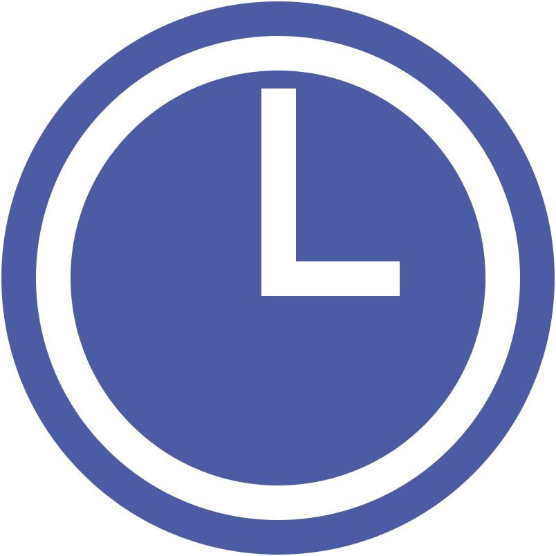

← 戻る
ホーム
設定
リロード
最終更新：取得中...
2026/07/17(金)
12:00

駅名
×
上り
下り
発車時刻
通過列車表示
列車番号
列車名/種別
始発〜終着
×
編成情報の投稿
×
列車番号:
対象運用:
編成を入力または選択してください:
投稿する
投稿を取り消す
乗換路線の選択
×
アプリ設定
×
日付・時刻の変更機能
※オンにすると、画面右下に日付・時刻を変更するためのボタンが表示されます。
日付・時刻の手動設定
×
設定日付
設定時刻
適用する
リセット